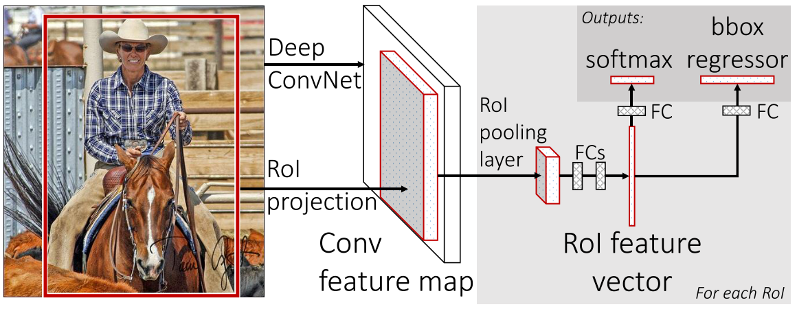

Fast R-CNN¶
This paper proposes a Fast Region-Based Convolutional Neural Network method (Fast R-CNN) for object detection, which improves training and testing speed and increases detection accuracy compared to R-CNN.
The author points out three drawbacks of R-CNN:
Training is a multi-stage pipeline.
Training is expensive in space and time.
Object detection is slow.
R-CNN is slow becuase it performs a ConvNet forward pass for each object proposal. Spatial pyramid pooling networks (SPPnets) were proposed to speed up R-CNN by sharing computation. Features are extracted for a proposal by max-pooling the portion of the feature map inside the proposal into a fixed-size output. However, there are two drawbacks of SPPnet:
Training is still a multi-stage pipeline.
Fine-tuning algorithm cannot update the convolutional layers that precede the spatial pyramid pooling.
Fast R-CNN¶
The figure below illustrates the Fast R-CNN architecture.
{kind=link}
A Fast R-CNN network takes as input an entire image and a set of object proposals. The network first produce a conv feature map. Then, for each object proposal a RoI pooling layer extracts a fixed-length feature vector from the feature map. Each feature vector is fed into a sequence of fully connected layers that finally branch into two sibling output layers, which outputs the softmax probability of object classes and the refined bounding-box positions for each class.
RoI Pooling Layer¶
The RoI pooling layer uses max pooling to convert the features inside any RoI into a small feature map with a fixed size. RoI pooling works by dividing the \(h \times w\) RoI window into \(H \times W\) grid of sub-windows and then max-pooling the values in each sub-window.
Multi-Task loss¶
A Fast R-CNN network has two sibling output layers. The first ouptuts a discrete probability distribution, \(p = (p_0, \dots, p_K)\), over \(K + 1\) categories. The second outputs bounding-box regression offsets, \(t^k = (t_x^k, t_y^k, t_w^k, t_h^k)\), for each of the \(K\) object classes. Let the ground-truth class be \(u\) and the ground-truth bounding-box be \(v\).
A multi-task loss \(L\) is used to jointly train for classification and regression:
in which
Truncated SVD for Faster detection¶
Large fully connected layers are easily accelerated by compressing them with truncated SVD. A simple fully connected layer with weight \(W\) is replaced by two fully connected layers with weights \(\Sigma_tV^\top\) and \(U\).
Results¶
The authors report SOTA results on VOC07, 2010, and 2012.
The authors also present detailed experiments in the multi-task training, scale invariance, number of proposals, and etc.